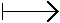
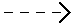

| Two Lines and One Quadric |
|
12 |
The set of lines that meet 2 general fixed lines
l1 and l2 is isomorphic to
the product
l1xl2, and is
a quadric surface in a
P3, as it is defined by the
quadratic Plücker equation and 2 linear equations.
Restricting the tangent equation
 |
= 0 |
| f : | General Quadric Q |  | (2,2)-form FQ. |
| P9 |  | P8 |
The fibres of f solve
our problem of determining `generic' configurations having